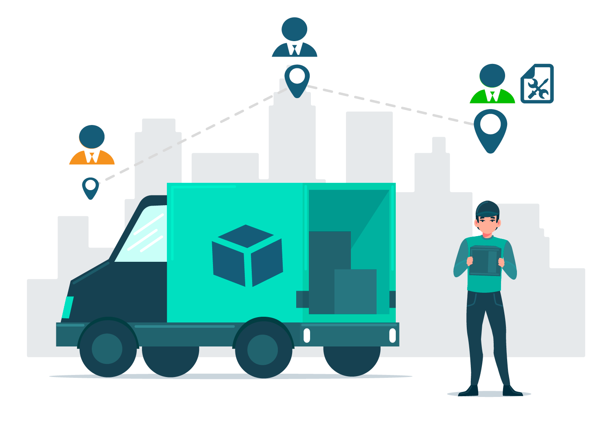
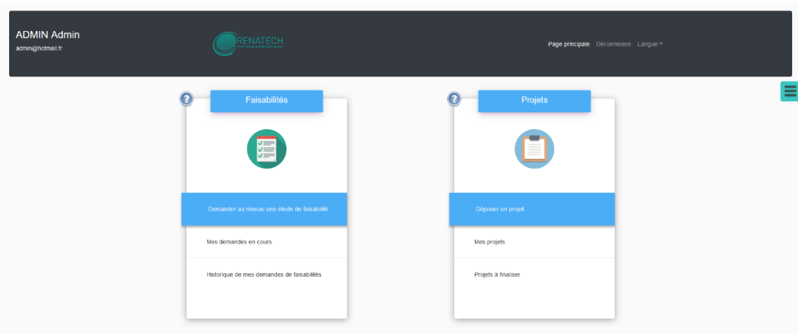
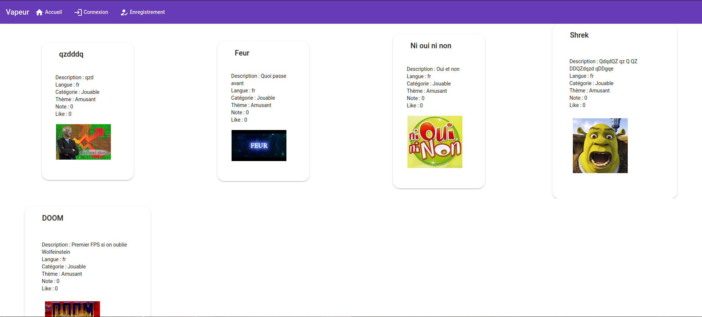

J'ai créé un jeu de 2048 grâce à JavaFX

Voici la liste de mes différents projets :
J'ai créé un jeu de 2048 grâce à JavaFX

En groupe, nous avons créé un jeu de "Space Invader" grâce à JavaFX. Nous avons utilisé Git pour la mise en commun et la gestion de version, nous avons chacun intégré des nouvelles fonctionnalité. Nous avons appris à utiliser des patrons dans ce projet.

Lors d'un projet, nous avons créé un logiciel de gestion de marchandise en JavaFX.

J'ai créé un site de gestion de Pokemon en Laravel.

En équipe, nous avons créé un site musé qui montrait des œuvres d'art généré par des IA avec le thème des époques vues par l'IA.

Lors de mon stage de deuxième année de BUT, j'ai pu participer au développement de l'application Repotech développée par le réseau Rénatech.
Ce projet en Python-Flask m'a permis de développer mes compétences web et de m'intégrer à une équipe de développeurs dans un contexte d'entreprise.

Dans le cadre de projets évalués, nous avons créé une API en Laravel qui contenait les informations d'une ludothèque, à laquelle l'utilisateur pouvait se connecter avec des droits différents. Par la suite, nous avons créé une application frontale en Angular à laquelle l'utilisateur se connectait ou non pour récupérer les informations de l'API en passant par le front-end.
